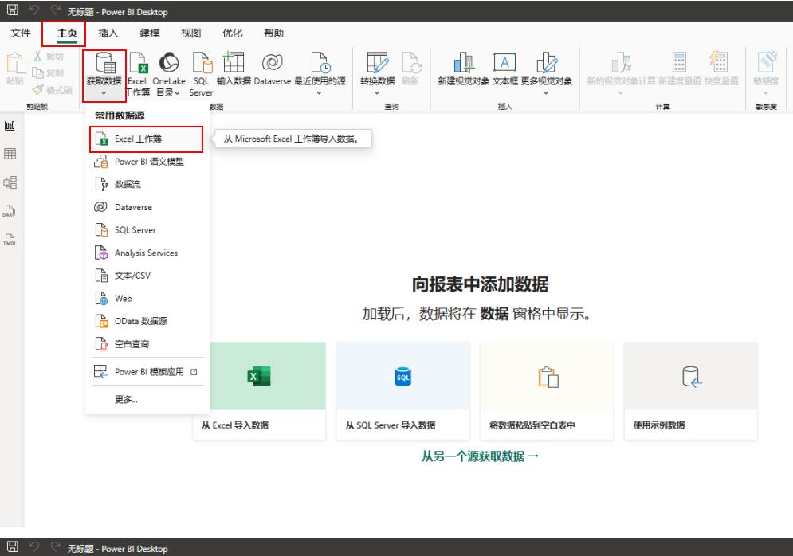
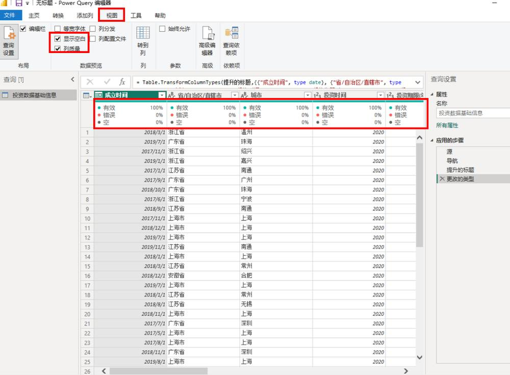
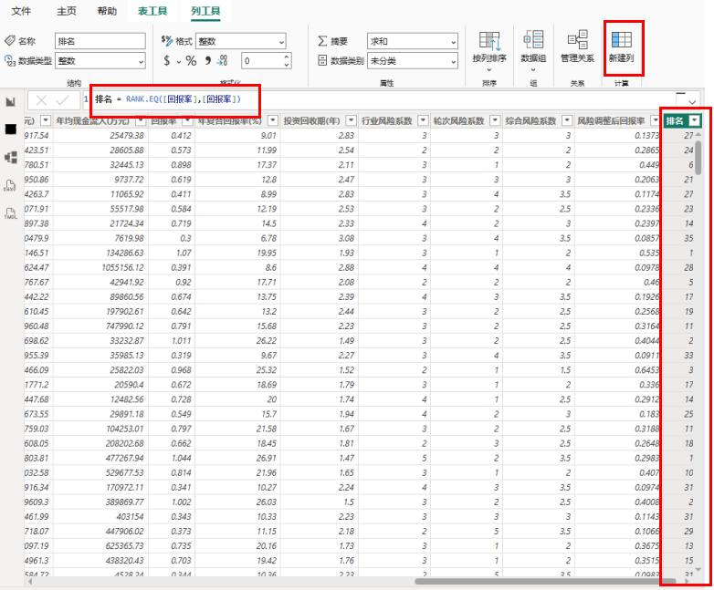
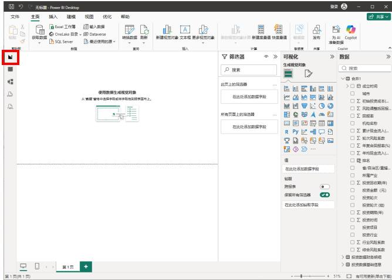

第 1 页 · 项目八

项目八
AI+项目投资分析
从数据到决策：AI赋能投资分析新范式
AI驱动投资洞察 · Power BI多维可视化 · 科学决策赋能
知识目标
理解项目投资分析关键维度与核心评价指标
掌握Power BI进行投资数据处理的基础操作
能力目标
运用AI技术构建项目投资分析评估模型
使用Power BI实现投资数据多维度可视化呈现
素养目标
树立投资相关数据采集与处理的规范意识
培育基于数据穿透产业价值的深度分析能力
【备注】大家好，欢迎来到项目八的学习。本次课程主题是“AI+项目投资分析”。我们将从知识、能力、素养三个层面设定清晰的学习目标，旨在帮助大家掌握利用AI进行项目投资分析的核心技能，实现从数据到决策的价值转化。
第 2 页 · AI导学 · 投资分析重塑
AI导学 · 投资分析重塑
AI如何重塑项目投资分析
传统投资分析的核心痛点
传统分析效率低下
手工整理海量项目数据，逐一核算回报指标，耗时费力易出错
优质机遇挖掘不足
海量项目信息中缺乏深度挖掘手段，极易遗漏潜在优质投资标的
风险识别存在盲区
依赖个人经验判断，难以精准识别隐藏风险，决策缺乏全面支撑
AI驱动投资跃迁
告别手工筛选旧模式，实现数据智能驱动的高阶价值投资跨越
AI重塑投资分析的核心逻辑与价值
| 核心维度 | AI技术应用方式 | 业务价值与落地成果 |
| 智能数据整合 | 自动化核算与整合 | 整合多源投资数据并自动核算回报，释放人力专注深度研判工作 |
| 关联规律深度挖掘 | 挖掘行业区域与回报的深层关联，清晰揭示投资背后的价值逻辑 | |
| 多模态信息融合解析 | 融合财报与行业报告等信息，构建更立体、完整的项目分析全景 | |
| 智能价值研判 | 投资潜力预测模型 | 精准预判项目未来收益潜力与风险，提前锁定优质标的规避风险 |
| 风险机遇智能诊断 | 自动识别影响收益的关键因子，精准定位风险点与增值点，实现科学决策 |
学习本项目的核心目标
掌握AI投资分析工具应用
熟练运用AI技术处理复杂投资数据，快速完成项目筛选与基础评估
培养智能投资决策思维
建立以数据洞察为核心的研判逻辑，让投资决策更加理性客观
实现投资分析价值跃迁
从基础的项目筛选，进阶到深度价值挖掘与风险管控的高阶投资分析
【备注】在正式开始之前，我们先了解一下AI是如何重塑项目投资分析的。传统分析模式中，投资人员面临手工处理海量数据、效率低下、容易遗漏机遇与风险等问题。而AI技术能帮助我们快速整合多维数据，深度挖掘投资回报规律，清晰揭示项目价值。本项目的核心，就是帮助大家掌握如何利用AI技术，实现从基础筛选到高阶价值投资的跨越，培养智能化的投资决策思维。
第 3 页 · 案例引入 · X科技投资回报分析任务
案例引入 · X科技投资回报分析任务
X科技投资回报深度分析
项目背景与核心分析目标
企业背景
高端芯片封装测试企业研-产-服一体化业务布局
项目任务
识别高潜力赛道地域优化组合提升资金效率
聚焦领域
车芯药化航五大产业覆盖各阶段投资轮次
分析价值
挖掘回报潜力空间支撑投资精准决策
核心分析问题与洞察方向
| 分析维度 | 关键分析问题 | 核心数据来源 |
| 机构回报对比 | 不同合作投资机构参与项目的年复合回报率差异如何？ | 投资合作机构档案项目财务结算台账 |
| 产业赛道分析 | “车芯药化航”五大产业的投资回报率排名与特征？ | 产业分类明细表行业投资回报数据库 |
| 轮次区域特征 | 不同投资轮次回报差异？前10项目与区域效益特点？ | 项目轮次/地域标签区域经济统计数据 |
分析执行与成果落地保障
数据清洗与整合
对历史投资、财务及合作方数据去重补全，统一口径，消除无效信息干扰，确保分析数据源准确。
多维度交叉验证
结合宏观行业趋势与微观项目数据交叉比对，剔除异常波动因素，保障洞察结论客观可靠。
决策落地与追踪
将分析结论转化为投资组合优化方案，设定量化评估指标，并建立长期追踪机制动态调整。
【备注】为了让大家更好地理解，我们将通过一个具体的案例来展开学习。我们将扮演X科技的投资数据分析师，这家公司正处于业务扩张期。我们的任务是基于它的投资项目数据，回答屏幕上列出的核心问题，分析机构、产业、轮次及区域的回报差异，从而为未来的精准投资提供数据洞察，并制定优化资金效率的落地策略。
第 4 页 · 01

01
TASK 01 · 任务一
AI驱动的项目投资分析
从理论到模型，构建分析框架，系统掌握项目投资的核心评估指标，理解各项指标背后的商业逻辑，并学习如何借助AI技术搭建精准、高效的投资分析模型，为项目决策提供数据支撑。
基础认知
全面学习项目投资分析的核心评估指标体系，深入理解各指标的计算逻辑、适用场景与商业含义，为后续模型搭建奠定坚实的理论基础。
AI构建模型
掌握如何利用主流AI分析工具，结合实际投资场景构建完整的分析模型，实现从数据输入、逻辑设定到智能评估与决策建议的全流程自动化。
【备注】现在我们进入任务一：AI驱动的项目投资分析。在这个任务中，我们将首先学习项目投资分析的核心评估指标，然后学习如何利用AI工具，构建一个专业的项目投资分析模型。
第 5 页 · Task 01 · Project Investment Analysis
Task 01 · Project Investment Analysis
项目投资分析基础认知
五大核心评估指标
投资回报率 (ROI)
衡量项目盈利能力的基础核心，直观反映投入与收益的比例关系
年复合回报率 (CAGR)
考量资金时间价值，精准刻画长期投资项目的收益增长趋势
投资回收期
评估资金回流效率的关键，直接体现项目的流动性与资金风险
综合风险系数
将项目潜在风险量化处理，规避主观判断偏差，提升评估客观性
投资指标深度解析与应用
| 核心指标 | 计算逻辑要点 | 应用场景与决策价值 |
| ROI | （净收益 / 总投入）×100%，聚焦静态收益 | 快速筛选低投入高回报的短周期项目，作为初步立项的门槛性指标进行评估 |
| CAGR | （期末值/期初值）^(1/n) -1，n为投资期数 | 对比长期项目（如3-5年基建）的收益成长性，判断项目是否具备复利增值潜力 |
| 回收期 | 累计净现金流量为正所需时间，分静态/动态 | 针对资金链紧张或对流动性敏感的企业，优先筛选回收期短、资金占用低的项目 |
| 风险调整回报 | （预期回报-无风险收益）/综合风险系数 | 当多个项目收益相近时，通过该指标选择“相同收益下风险最低”的最优性价比方案 |
投资分析的常见误区与应对
唯ROI论的片面性
避免仅看短期回报率，需结合CAGR与回收期综合评估项目长期健康度与资金压力
忽视隐性风险因素
不仅关注财务数据，需将政策变动、市场竞争等隐性风险纳入综合风险系数计算
脱离业务场景套用指标
初创期项目重成长性（CAGR），成熟期重回报质量，需匹配业务阶段定制评估逻辑
【备注】项目投资分析的核心是围绕一系列关键评估指标展开的。这些指标包括基础的投资回报率（ROI），它直观反映了项目的盈利效率；考虑了时间价值的年复合回报率（CAGR），这对于长期投资项目的评估尤为重要；反映资金回流速度的投资回收期，是衡量项目流动性风险的关键；以及兼顾风险的综合风险系数和风险调整后的投资回报率，它们能帮助我们在不同风险水平下，科学地比较项目的性价比。
第 6 页 · Task 01 · 投资分析体系搭建
Task 01 · 投资分析体系搭建
运用AI构建项目投资分析模型
AI驱动的投资分析核心逻辑
数据层
整合项目、财务、投资机构三类基础数据
指标层
构建机构/产业/项目/轮次/区域回报率指标
分析层
计算排序+特征统计+相关性量化分析
应用层
输出决策建议与投资分析体系模板
模型价值与落地保障
聚焦投资回报率核心
所有分析维度均围绕ROI展开，摒弃无效数据干扰，确保每一步分析都服务于投资决策有效性。
实现分析标准化落地
将复杂的投资逻辑转化为标准化数据节点与计算流程，减少人工分析差异，实现结果可追溯。
多维定向解决核心问题
覆盖产业、区域等五大维度，精准回答机构关注的关键问题，提供清晰的下一步行动建议。
【备注】我们可以利用AI工具，将这些分析逻辑转化为一个标准化的分析模型。这个模型遵循“数据输入-指标构建-多维度量化分析-决策支持”的核心逻辑，能够系统地解决我们提出的5个核心问题，确保每一步分析都服务于投资回报率，并最终输出可落地的决策建议。
第 7 页 · Task 03 · AI迭代优化投资分析模型
Task 03 · AI迭代优化投资分析模型
AI构建项目投资分析模型迭代优化
01 / 可视化迭代核心方向
迭代提问机制
针对投资模型各节点，向AI追问场景细节，推动其推荐更贴合分析目标的可视化形式。
场景精准校验
验证AI图表是否适配投资分析场景，例如层级回报数据是否需兼顾对比与关联解读。
人工信息补充
分析师叠加政策时效、竞争壁垒等外部业务信息，弥补纯数据可视化的信息缺失。
决策导向升级
从基础的数据呈现，深化为具备风险提示、机会建议的投资决策指引，提升模型价值。
02 / 课堂研讨：树状图推荐的合理性评估
| 评估维度 | 具体分析场景 | 核心讨论问题与优化思路 |
| 适配性校验 | AI推荐树状图展示省-市年复合回报率层级分布 | 核心问题：树状图仅能呈现数值分布与层级关系，是否缺乏对区域投资潜力的深度逻辑关联？ / 优化：补充对比该区域历史回报率折线，判断当前数据是否处于上升期，而非仅看静态占比。 |
| 决策价值升级 | 将可视化成果转化为投资决策依据 | 补充维度：叠加区域政策有效期标注（如免税期）、竞争格局标签（蓝海/红海）等定性信息。 / 结果：从“展示数据”升级为明确指出“哪些区域值得优先投入、哪些区域需规避风险”的指引。 |
03 / 人工优化AI分析的核心价值
规避模型局限性风险
校验AI推荐的可视化与结论，防止因数据相关性误判造成对投资价值的片面认知。
提升分析专业壁垒
分析师注入行业经验与业务逻辑，使分析成果具备不可替代的决策深度，超越基础AI报告。
强化决策落地可行性
补充执行层面的约束条件，让分析结果从理论上的“可行”升级为现实中可落地执行的方案。
【备注】本页我们重点讨论如何迭代优化AI生成的投资分析模型。首先，优化的核心在于可视化与决策增强：通过不断向AI追问场景细节，让它推荐更精准的图表，并由分析师补充外部信息，让数据“活”起来。
课堂研讨的重点在于“合理性评估”。当AI推荐用树状图展示省市级回报时，我们需要意识到树状图本身的局限性——它只能展示静态分布。这时候就需要我们作为分析师去升级它，比如叠加历史趋势、政策有效期等，把“展示数据”变成真正能指导决策的“投资指引”。
第 8 页 · 02
02
TASK 02 · 任务二
Power BI项目投资可视化
从理论到实践，亲手打造可视化看板，将分散的投资数据进行整合与深度加工，构建专业的投资分析决策体系，掌握用数据洞察投资价值的方法。
数据采集与加工
学习使用Power BI获取Excel中的投资数据，完成数据清洗、合并与计算，处理重复与异常值，为后续分析建立坚实的数据基础。
投资看板可视化构建
掌握各类可视化图表的制作技巧，把加工好的投资数据转化为动态分析视图，搭建综合投资分析看板，实现收益与风险的全面监控。
【备注】理论学习结束，现在我们进入任务二：Power BI项目投资可视化。在这个任务中，我们将亲手操作，学习如何从Excel文件中获取投资相关数据，进行复杂的加工处理，并最终将其转化为一个直观、强大的投资分析看板。
第 9 页 · Task 01 · Data Acquisition & Cleaning
Task 01 · Data Acquisition & Cleaning
数据采集与初步清洗
Excel 数据接入与清洗核心流程解析
| 步骤 | 操作执行路径 | 核心操作说明 |
| 01 获取数据 | 主页 → 获取数据 → Excel | 打开Power BI点击“获取数据”，选择Excel格式，选定目标文件“X科技投资项目基础信息表.xlsx”与财务分析表。 |
| 02 预览质量 | 视图 → 列质量 | 进入数据预览界面后，通过“列质量”功能检查每列数据的有效、错误及空值分布情况，定位问题数据。 |
| 03 处理错误 | 选中列 → 删除行 → 删除错误 | 针对“年均现金流入”列中的错误值记录，执行删除错误行操作，清除无效数据，保证数据源准确性。 |
| 04 确认应用 | 关闭并应用 | 完成所有数据清洗与修正操作后，点击“关闭并应用”按钮，将处理后的数据加载至Power BI模型中备用。 |

01 数据获取入口
Power BI主页功能区中“获取数据”的Excel选项，是导入本地表格数据的标准入口，支持同时加载多个表文件。

02 列质量诊断视图
在视图菜单启用“列质量”后，可直观看到各字段的完整度与错误率统计，是快速定位数据质量问题的利器。
03 清洗执行与生效
选中错误数据列执行删除错误行，清洗操作仅在预览视图生效；必须点击“关闭并应用”，清洗后的数据才会正式进入Power BI数据集。
关键注意事项
原始数据规范性
源Excel避免合并单元格、空行，保证表头清晰便于识别。
错误处理策略
根据分析需求，选择删除错误行或替换错误值，勿保留无效数据。
刷新同步机制
修改源Excel文件后，需手动刷新数据集，确保报表实时性。
【备注】这一页是我们进入实战的第一步：数据采集与初步清洗。核心是使用Power BI连接Excel数据源，并对数据质量进行初步把控。操作主要分为四步：第一，从“主页”获取两个Excel项目数据；第二，进入预览界面后，利用“列质量”功能检查数据是否存在错误或空值；第三，重点处理“年均现金流入”等关键指标列的错误行；最后，一定要点击“关闭并应用”来使清洗生效。注意看演示界面，左边是数据导入的入口，右边就是数据质量诊断的视图。特别强调三点注意事项：首先源Excel格式要规范；其次错误数据必须处理干净；最后源文件变化后记得刷新同步。做好这一步，才能为后面的分析打好坚实的数据基础。
第 10 页 · Task 02 · 数据加工与核心指标构建
Task 02 · 数据加工与核心指标构建
数据加工：合并计算与排名分析
核心操作：表合并 · 自定义列计算 · 格式规范化
01 合并查询表
以机构、项目、金额为键，合并双表数据
02 展开并去重
展开合并结果集，清理重复冗余字段列
03 计算排名指标
新增列运用RANK.EQ公式，对回报率排序
04 统一数值格式
回报率相关字段统一设置为百分比展示
关键步骤解析：表合并与列展开
首先利用Power Query的合并查询功能，关联基础信息表与财务数据表；合并完成后展开嵌套数据表，删除重复列，为后续分析清理出一张完整、干净的宽表，确保数据一一对应无歧义。

加工后的应用价值与业务赋能
整合多源数据，消除信息孤岛
将分散在不同表格中的机构信息与财务表现进行关联，打通跨表逻辑，避免反复切换核对，形成统一的分析口径。
自动排名排序，直观定位优劣
通过公式自动计算排名指标，快速锁定回报率最高与最低的投资项目，帮助决策者在大量数据中迅速识别标杆与待改进项。
规范格式展示，降低沟通成本
统一财务指标的数值格式，让跨项目的横向对比一目了然，消除数据阅读障碍，提升团队沟通与决策的效率。
【备注】数据清洗完成后，我们进入核心的数据加工阶段。第一步是将两张表合并，通过“机构名称、投资项目、投资金额”建立关联；随后展开合并的数据并删除重复项。接下来，利用DAX公式新增“排名”列，量化每个项目的回报率表现。最后，将回报率等关键财务指标统一调整为百分比格式，确保所有分析数据格式规范、清晰可比。
第 11 页 · Task 03 · 投资回报看板可视化设计
Task 03 · 投资回报看板可视化设计
数据可视化看板——投资回报全景洞察
核心对比与双维分析
01. 投资机构回报对比
采用簇状柱形图直观呈现行业内前5头部投资机构的年复合回报率差异，快速识别表现最优的标杆机构，明确市场基准水平。
02. 产业回报与风险双维解析
整合折线、簇状柱形与散点图等多种图表，从回报率、风险系数两个核心维度交叉分析各产业，精准定位高收益低风险的优质赛道。
细分差异与特征透视
03. 投资轮次效益差异对比
结合簇状条形与柱形双图组合展示，清晰对比天使轮、A/B/C轮等不同阶段项目的投资回报率与成功率差异，明确最优介入窗口期。
04. 高回报项目关键特征分布
通过环形图拆解前10高回报成功项目的行业、技术领域与地域分布占比，挖掘高收益项目背后的共性特征与成功规律。
区域洞察与决策应用价值
| 核心分析场景 | 业务决策支撑与价值体现 |
| 区域梯度分布研判 | 借助树状图展示省-市两级的年复合回报率梯度分布，精准识别投资回报高地，辅助跨区域投资布局的资源分配与决策调整。 |
| 投资策略优化 | 整合五大维度数据，科学判断不同产业、轮次与区域的收益风险比，制定差异化投资策略，规避低效投入，提升整体资金使用效率。 |
| 机构对标管理 | 对比头部标杆机构回报表现，精准定位自身差距，指导团队调整项目筛选标准与投后赋能动作，持续提升机构在行业内的竞争力。 |
【备注】数据准备就绪，现在我们进入最激动人心的可视化环节。我们的目标是构建一个像这样的综合看板。这个看板整合了投资机构、产业、投资轮次、高回报项目和区域五大分析维度，让我们能360度全景洞察投资状况，不仅能看到当下的回报水平，更能通过多维度交叉分析找到未来机会与风险。
第 12 页 · Step 01 · 可视化实现步骤 (1/2)
Step 01 · 可视化实现步骤 (1/2)
可视化实现步骤：从主题选择到多维图表创建
01 选定专业报表主题
点击“报表视图”功能入口，选择“可访问的潮汐”专业主题，统一看板视觉风格与配色体系，奠定专业分析基调。
02 构建回报对比图表
创建簇状柱形图对比“前5投资机构年复合回报率”；通过折线+簇状柱形组合图，分析五大产业回报率与风险调整回报的关联。
03 设计分布与关联图
以环形图展示各产业投资数量占比及高回报项目特征；利用散点图挖掘“综合风险系数”与“年复合回报率”的相关性规律。
操作界面与核心配置要点
可视化视图配置基础：首先在报表视图模式下完成数据源加载与字段识别，系统将自动解析数值型与分类型字段。
图表生成逻辑：将目标分析维度（如机构名称、产业）拖入分类轴，将回报率、风险系数等拖入数值轴，即可一键生成基础图表，再按需调整配色与数据标签。

▲ 报表视图操作界面，可快速选择图表类型并配置数据字段。
关键实现技巧与优化提示
主题统一：所有新建图表均应用同一报表主题，避免多图表视觉风格割裂，确保看板整体性。
数据联动：完成多图表创建后，建立数据筛选器，实现“点击产业环形图区域，同步联动柱形图与散点图数据”。
细节强化：为所有图表开启“数据标签显示”与“坐标轴网格线弱化”，降低阅读门槛，突出核心数据数值。
【备注】这一页我们来拆解可视化看板的具体实现步骤，主要分为三个阶段：
第一步，在报表视图中选定一个统一的主题，例如“可访问的潮汐”，这能保证我们后续所有图表风格统一，更专业。
第二步，是构建核心对比类图表。我们会用到簇状柱形图来直观对比前五大投资机构的回报差异；同时利用折线与簇状柱形的组合图，分析回报率与风险之间的联动趋势。
第三步，则是补充分布与关联分析。环形图可以让我们快速看清各产业的项目数量构成，而散点图是识别高回报低风险优势项目的关键工具。配合屏幕上展示的操作界面，大家在实际操作中只要掌握拖拽字段、配置坐标轴的基础方法，就能高效完成这些可视化构建。
第 13 页 · Task 02 · Data Visualization Implementation
Task 02 · Data Visualization Implementation
可视化实现步骤 (2/2)
关键图表构建与内容设定
01 簇状图：轮次回报对比
选用簇状条形或柱形图，直观对比不同投资轮次的年复合回报率差异。
02 树状图：区域回报层级
搭建省-市两级数据结构，呈现回报率分布，并配置钻取功能探索深层信息。
03 标题设定：看板主题
添加核心看板标题：“X科技投资回报与风险全景分析可视化看板”。
04 交互规划：关联逻辑
梳理各图表字段关联，确保切片器可精准筛选所有关联图表，达成数据联动。
看板交互配置与最终交付
05 切片器：实现全局筛选
创建核心筛选切片器，配置交互关系，确保其对所有图表生效，支持灵活的数据视角切换。
06 美化：统一视觉规范
统一看板配色方案与字体层级，对齐所有图表元素与标题，使整体视觉风格专业一致。
07 交付：完整测试验收
全面测试所有筛选器与钻取功能的逻辑准确性，确保数据一致无误后，完成最终交付。
【备注】继续完成看板的构建。我们用簇状对比图分析不同投资轮次的效益差异，用树状图展示省-市区域的回报梯度并配置钻取功能。然后为看板添加“X科技投资回报与风险全景分析”的标题，并规划好图表间的联动关系。最后，配置切片器实现全局筛选，统一美化视觉规范并进行最终的逻辑校验，这样一个功能强大的投资分析看板就全部完成了。
第 14 页 · 感谢聆听 · 共创AI赋能决策新篇章

感谢聆听 · 共创AI赋能决策新篇章